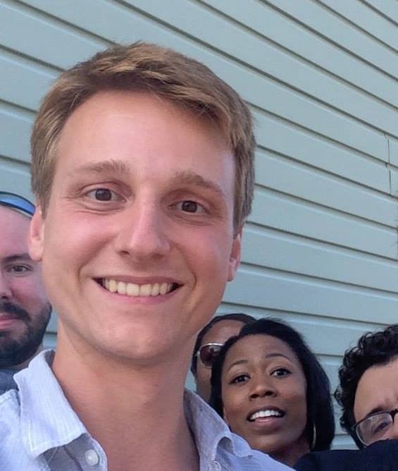

 I'm a cognitive science researcher working for the Cognitive Data Science (CODAS) Lab at Rutgers University - Newark. My research broadly covers computational analysis of human cognition with a particular focus on digital media. I've done work predicting the items in movies people are most likely to notice, the elements of a story people are most likely to remember, the perceptually ideal location to join two film edits. More recently, I've applied machine learning to educational settings to identify moments when kids are primed for learning, with an eye towards applications within the classroom. For fun I like to figure out how movies and video games engross audiences on both a perceptual and social level. You can check out more detailed descriptions of my current projects here.